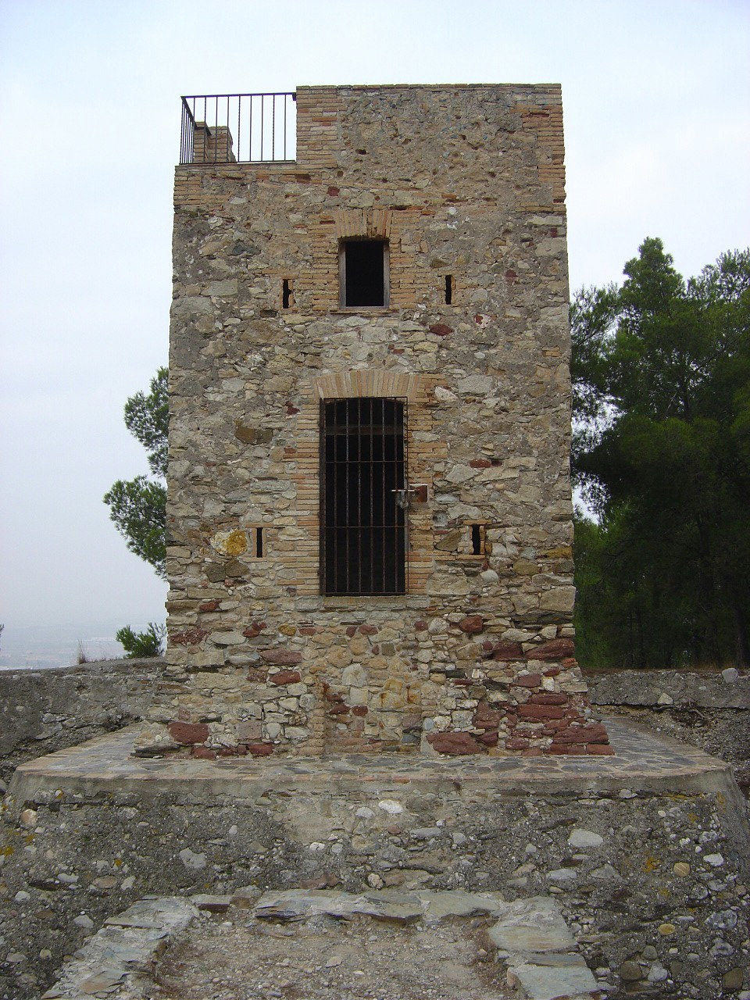
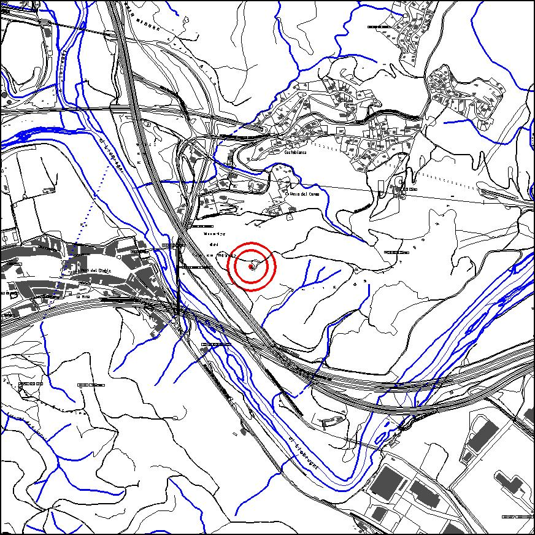

|  |  |
Nom de l’element: Torre Fossada del Telègraf
Clau d’identificació: B.03
Nucli o indret: Turó del Telègraf, a la banda esquerra del riu LLobregat
UTM: X= 411.737, Y= 4.592.168, 165 m snm.
Règim del sòl: Sòl no Urbanitzable
1.1. Època de construcció i tipologia:
Té murs de pedra, aïllada per un fossat d’uns 20m de diàmetre fet de paredat de pedra. S’accedia per un pont llevadís. Les mides de la torre són d’una planta de 3x3 m i uns 7m d’alçada. Va ser utilitzada com a torre de telegrafia òptica a mitjans del s. XIX.
1.2. Estat de conservació:
En general, molt bo, doncs s’ha realitzat una intervenció al 2005.
1.3. Ús actual:
Cultural (visites guiades mensuals).
1.4. Accés:
Accés fàcil per la pista forestal des del barri de Costablanca o des de Can Coromines.
Torre de telegrafia òptica.
3.1. Usos admesos:
Ús recreatiu cultural i social.
3.2. Condicions d’ordenació:
Segons Pla Especial a redactar.
3.3. Accés i serveis:
Pista forestal des del barri de Costablanca o des de Can Coromines.
BCIN (Bé Cultural d’Interès Nacional)
Aquest bé complirà allò descrit als art. 33, 34,35 i 36 de la Llei de Patrimoni Cultural, així com els deures fixats als art. 21 i 25.
Monument històric. Decret 22/04/1949, BOE 05/05/1949. (Número Registre BCIN: 1028-MH, Número Registre BIC: R.I.51.5529) // Disposició addicional 1.2 de la Llei 9/93, de 30 de setembre, del patrimoni cultural català.